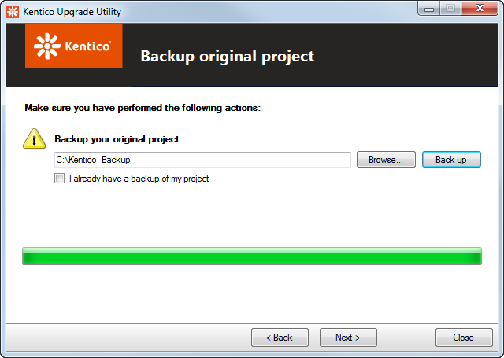

Upgrading and hotfixing an instance
You can launch the upgrade/hotfix utilities in two ways:
Click Apply in the Upgrade/Hotfix or Check dialog of Kentico Installation Manager.
Execute the file unpacked from the hotfix package.
Getting hotfix packages
You can:
download hotfix packages through the Kentico Installation Manager.
download the packages from http://devnet.kentico.com.
If you need to hotfix the source code version, please contact us at support@kentico.com.
Note: Hotfixes are cumulative, so you only need to apply the latest hotfix to fix all issues covered by previously released hotfixes.
The hotfix or upgrade process consists of the following steps:
Hotfixing with files in deployment or source control mode
If your system stores virtual objects on the file system (due to enabled deployment mode or source control options), you need to return the files to the database before you apply the hotfix.
Re-enable deployment mode or source control after you finish the hotfix procedure.
Specify the root folder of the Kentico instance you want to upgrade or hotfix.
This is only necessary if you ran the utility manually (not from Kentico Installation Manager).
Click Next.
Specify a project backup folder and click Back up OR check the I already have a backup of my project check-box.

Backing up the projectClick Next.
Specify a database backup folder and click Backup OR check the I already have a backup of my database check-box.
Backing up the databaseClick Next.
Keep the default settings (i.e., all options enabled) OR click the Switch to advanced mode (for experts only) link and specify, whether the upgrade or hotfix replaces project files, setup files (i.e., external utilities) and execute SQL scripts.
Click Next.
Select one of the first set of options:
Use default App_Offline.htm - the utility creates a new App_Offline.htm file in the root of the web project to put the instance into an offline mode (see How to: Prepare to Deploy a Web Project for more details on the use of the file).
Use existing App_Offline.htm_ - uses an existing App_Offline.htm_ file and renames it to App_Offline.htm. The file must be present in the project's root folder for this option to be available. See the second option below for more details.
Select one of the second set of options, which lets you choose what to do with the App_Offline.htm file:
Delete - the file will be deleted.
Rename to App_Offline.htm_ - the file will be renamed to App_Offline.htm_ and usable on next upgrade or hotfix.
Click Next.
A log showing progress of the hotfix or upgrade is be displayed. You can enable the Show error messages only check-box to display only error messages in the log.
Click Next, once the process finishes.
The utility lets you know if the hotfix or upgrade finished successfully. By clicking the Open log file link, you can open the upgrade process log that was displayed in the previous step.
Physically, the log is saved in ~\App_Data\log.txt, so you can inspect it even after closing the utility.
If an error occurred while applying the hotfix or upgrade, the utility will notify you with a message and an error log.
Click Close to finish and close the utility.